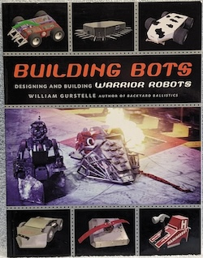
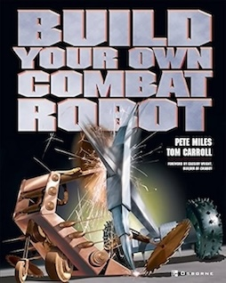
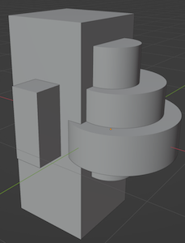
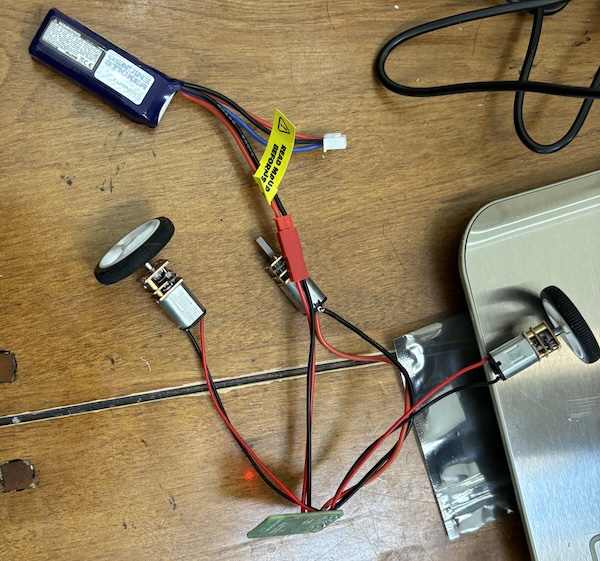
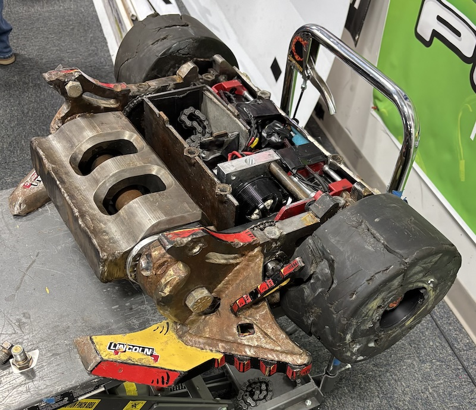
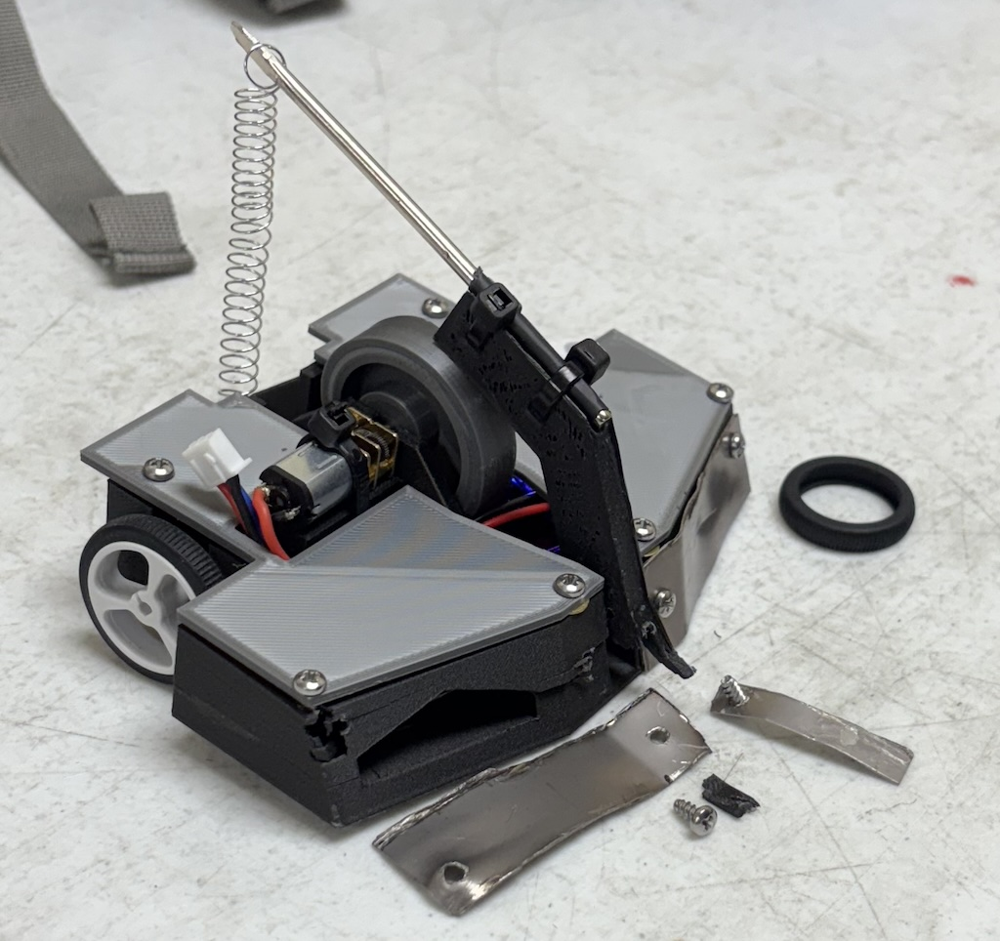

04/05/2025
As a kid, I loved getting books from the library about combat robots. I was always interested in tools and building things, but the idea of making a robot was just a little more exciting than making furniture.
 
Learning about robots introduced me to new building techniques, but unfortunately actually making a combat robot, was just not very accessible at the time. Welding? Car batteries? Wheel-chair motors? It’s a tough sell for parents and suburban neighbors.
After 20 years, the hobby has gotten a lot more accessible, thanks to 3D printers, but also improvements in batteries, motors, and radio. The whole process is smaller, cheaper, and easier to assemble, so that even local schools have robot making programs.
Recently a friend (who is a 3D printer enthusiast) invited me to make a 150g robot for a small community event, and I had a great time. We didn’t do anything extraordinary, but I wanted to share a little bit about the project. My takeaway, is this can be a great hobby for learning about electronics and mechanics, especially for kids.
At 150g most robots use a body that’s 3D-printed or adapted from an RC cars. To keep weight low, they typically only have 2 wheels. The main design decision to make is how your robot will attack. Most of your weight and body will arrange itself around that.
Spinning weapons are the most popular. It’s a simple and effective design that’s really hard to beat. But we wanted to try something a little different. We found an idea online about a spring loaded flipper. The spring is loaded by lifting an arm using a “snail cam” which can be rotated continuously.
We had high hopes of having multiple weapons, but as these things tend to go, you must simplify and cut scope as you go.
The main part I worked on is the flipping arm and snail cam. It’s designed with an increasing, but decelerating slope, so that the work required by the motor stays constant.
My first attempt was to cut one with a hand saw from UHMW polyethylene. They may not look excellent, but should work, after a little sanding.

We found the 3D printing was sturdy and smooth enough, so we chose that instead. I wrote a python script to generate the basic curve in Blender, and then used simple boolean cuts to get all the parts we need.


N20 is a popular style of motor for this size. Apparently they vary greatly in quality and specification. We just got a few cheap ones on Amazon. I like that you can order them with a small gearbox targeted for a specific RPM, so it’s easy to get the torque/speed you need. For example, the cam uses a much lower RPM than wheel motors.

The radio receiver, and motor controllers are available as a single board. Just wire the motors to the appropriate terminals. The model we used is called “Malenki Nano” which is very popular. Connecting the receiver to a controller was as easy too.

The body was drawn in a traditional CAD program. It went through many iterations and printings as we tried to fit everything in. Here are a few techniques we found helpful:
Attach components with zip ties. It makes it easy to move parts between bodies, and is very sturdy. Just add holes for them in your CAD design.
Prototype parts in cardboard first. If you have a simple base, it’s easy to tape on pieces to see how they will fit.
Use fast and cheap printer settings until the final revision (and it’s always one more than you think).

The event was very casual and had a positive atmosphere. People were open about showing their robots and learning from each other. Ages varied greatly, with some younger kids, teenagers, and a few Dad’s joining their sons.
A pro stopped by to show off his full-size robot!

In our first (and only) battle we took a few big hits from a spinning blade. Luckily none of our major parts were damaged. So we should be ready to try again after printing a new body.
